scenarioFuelSlosh
Overview
Demonstration of basic 6-DOF orbit and fuel slosh simulation setup. This script sets up a 6-DOF spacecraft orbiting a planet. The purpose is to illustrate how to create a spacecraft, attach a gravity model and a fuel tank, and run a basic Basilisk simulation.
The script is found in the folder basilisk/examples and executed by using:
python3 scenarioFuelSlosh.py
Simulation Scenario Initial Setup
The simulation layout is shown in the following illustration. A single simulation process, containing the spacecraft object, is created. Gravity and the Fuel Tank effectors are attached to the spacecraft dynamics to simulate the desired scenario.

When the simulation completes 5 plots are shown for each case. One plot shows the spacecraft trajectory in the orbital plane. The second and third plots show the relative variation of orbital angular momentum and energy, respectively. The fourth and fifth plots show the relative changes in rotational angular momentum and energy. The third case shows a sixth plot, representing the fuel slosh particle motion.
State Effectors Setup
The model used to simulate the fuel slosh is a classic mass spring damper system coupled with the rest of the spacecraft. The fuel slosh particle is added to the simulation using the Module: linearSpringMassDamper module.
The fuel slosh partile \(k\) is the spring constant in kg/s^2 (N/m), \(c\) is the damping coefficient expressed in kg/s.
As we can see from the following illustrations, r_PB_B is the vector
that expresses the particle equilibrium position
in the body reference frame. pHat_B is the direction of particle
motion, expressed in the body reference frame.
rhoInit and rhoDotInit are the initial particle position and velocity,
expressed in m and m/s respectively. massInit is
fuel mass that is moving in the selected direction.

For further information on the model implemented you can consult this conference paper.
Next the Module: fuelTank module is used to initialize and define the
tank properties and the particles are introduced in it.
The fuel tank is represented by a constant volume sphere. The radius is set
to 0.5 m using the radiusTankInit variable.
propMassInit is the initial propellant mass that does not generate
slosh. r_TcT_TInit is the initial position vector
# from B to tank point in B frame components. r_TB_B is the
position of the tank in body frame.
The steps to add gravity objects are the same shown in the scenarioBasicOrbit.
Illustration of Simulation Results
The following images illustrate the expected simulation run returns for a range of script configurations.
show_plots = True, damping_parameter = 0.0, timeStep = 0.75
 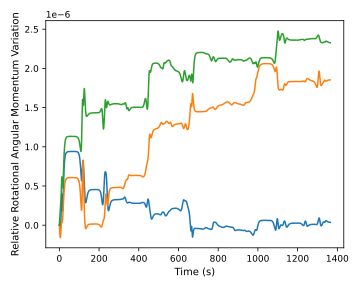
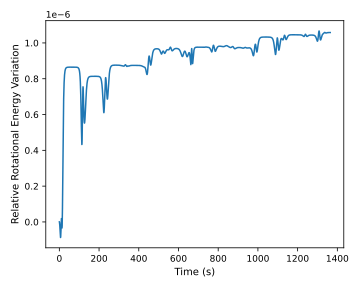
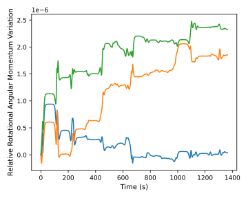
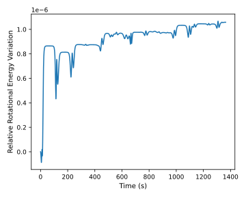
Here we should see conservation with machine precision in every plot, because we are not considering dissipations. In this case, we do not see a perfect conservation of Rotational Angular Momentum and Rotational Energy because of the high timeStep. We cannot use too high timeStep because we will lose the periodic behaviour of the fuel slosh; and the integration could diverge. On the other hand, small timeStep makes the simulation very long.
show_plots = True, damping_parameter = 0.0, timeStep = 0.30
This case illustrates, how reducing the simulation time step, the solution is close to machine precision. This highlights the conservative nature of the forces used so far, confirming that the simulation is running correctly.
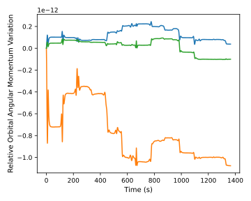 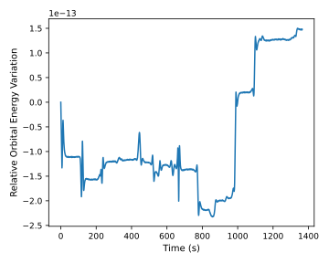 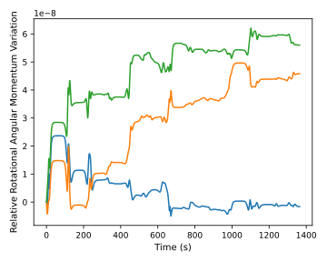 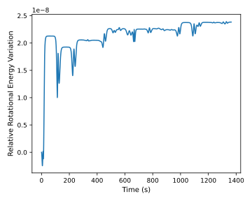show_plots = True, damping_parameter = 15.0, timeStep = 0.75
This case illustrates that considering damping we have Rotational Energy dissipation due to fuel slosh. It is interesting to note that the Rotational Angular Momentum shows a more precise conservation compared to the first case, for equal timeStep. This happens because the damping reduces the particles motion, so the integrator becomes more stable. Furthermore, from the last image it is possible to see how the motion is similar to a mass spring damper system; but it is slightly different because the motion is coupled with the rest of the spacecraft.
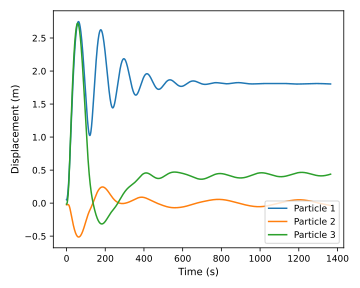 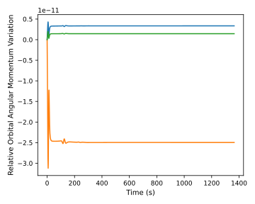 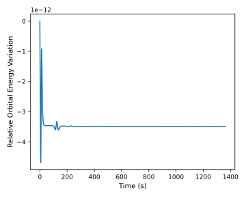 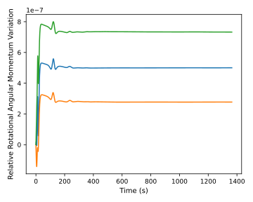
- scenarioFuelSlosh.run(show_plots, damping_parameter, timeStep)[source]
At the end of the python script you can specify the following example parameters.
- Parameters:
show_plots (bool) – Determines if the script should display plots
damping_parameter (float) – Hinge damping coefficient
timeStep (float) – Integration time step